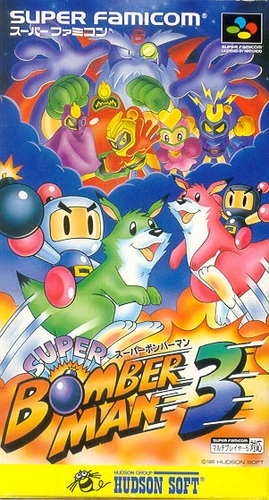

Sobre o Jogo
*Super Bomberman 3* é um clássico jogo de ação e estratégia lançado para o Super Nintendo Entertainment System (SNES) em 1995. Desenvolvido pela Hudson Soft, ele é o terceiro título da popular franquia *Bomberman*.
O jogo introduziu novos personagens, modos multiplayer aprimorados e uma experiência de jogo ainda mais viciante.
História
Em *Super Bomberman 3*, o universo de Bomberman está em perigo após a chegada dos Cinco Malvados (Five Dastardly Bombers), que foram libertados de sua prisão por Bagular, um vilão intergaláctico determinado a dominar o cosmos.
Os Cinco Malvados são robôs poderosos e traiçoeiros, cada um com habilidades especiais e planetas dedicados ao seu comando. Bagular os usa para espalhar o caos e criar uma série de desafios para o herói, Bomberman, e seu fiel amigo Louie.
A jornada do jogador passa por diversos planetas, cada um com ambientes únicos, inimigos desafiadores, e armadilhas perigosas. Ao derrotar os Cinco Malvados, o jogador deve enfrentar Bagular em uma batalha final épica para restaurar a paz na galáxia.
Data de Lançamento
O jogo foi lançado em setembro de 1995 no Japão e chegou ao resto do mundo logo depois. Sua popularidade cresceu devido aos modos cooperativos e competitivos.
.jpeg)